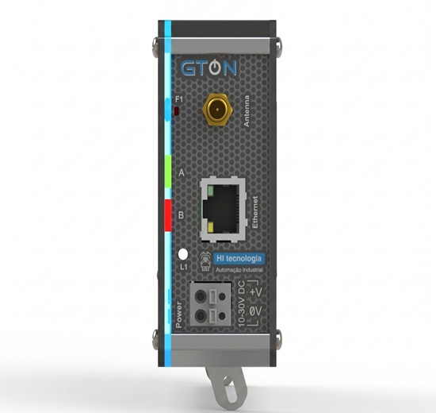

Programação de Formação HI Tecnologia
O GTON-P é um gateway programável e modular da HI Tecnologia que funciona como um CLP de pequeno porte, integrando até seis interfaces customizáveis para converter protocolos e meios físicos enquanto executa lógicas de controle. Nessa etapa, você aprenderá a realizar tratamento de alarmes, filtros e lógicas complexas utilizando o ambiente HIstudio, além de trabalhar com protocolos como MQTT e o Portal de Telemetria. Não se esqueça de salvar os arquivos das aulas em pastas individuais para cada tema, na sua pasta localizada em: L:\GAdmn\DSuporte Tecnico\Minha Pasta.

Leia o conteúdo tutorial sobre o GTON P e o seu Manual. Em seguida, escreva exemplos de modelos e de utilização do equipamento.
Assista ao curso sobre protocolo Modbus e conversões de valores para seus dados fundamentais. Após isso, aplique um projeto no GTON P SET para tratativa e conversão de dados.
Entenda sobre o conceito de deslocamento de Bits e aplique em um programa no GTON P SET. Finalize apresentando seus resultados para os colaboradores do departamento.
Veja o procedimento para configurar um GTON P RS3 como conversor RS485 - RS232. Este é um cenário clássico na Petrobrás, um grande cliente da HI Tecnologia, onde eles utilizam o GTON apenas como conversor de RS232 para RS485.
Objetivo: desenvolver no GTON P SET uma aplicação que receba a String de pesagem de uma balança industrial, identifique o peso, calcule o valor do saco conforme uma receita parametrizada na memória flash do CLP e apresente a String final em um monitor.
Cenário: um cliente precisa pesar sacos de frutas utilizando uma balança industrial com comunicação RS232. A balança envia os dados em caracteres ASCII no formato "1221KG". O programa deverá receber essa String, remover a unidade "KG" e manter apenas o peso "1221", permitindo sua utilização no cálculo do valor final esperado para o comércio e na previsão do fluxo de caixa.
| Tipo de fruta | Preço por kg |
|---|---|
| Banana | R$ 4,00 |
| Maçã | R$ 12,00 |
| Laranja | R$ 6,00 |
"KG" e convertendo o peso para um formato que possa ser utilizado nos cálculos.